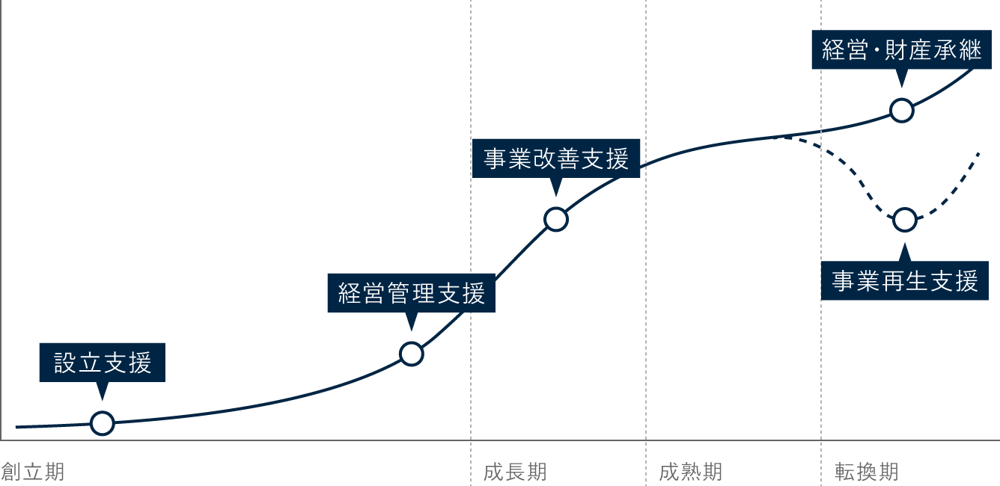

福井新聞の「首都圏進出支援」に当法人に関する記事が掲載されました。ぜひご覧ください。
※福井新聞掲載許可済
Get ready for a new era of opportunity and challenge
当法人の取組みがメディアに掲載
当法人の取組みが新聞・テレビ等のメディアに取り上げられています。
福井新聞の「首都圏進出支援」に当法人に関する記事が掲載されました。ぜひご覧ください。
※福井新聞掲載許可済
日本経済新聞の「2024 新幹線延伸 変わる北陸 開業半年の景色（中）」に当法人に関する記事が掲載されました。ぜひご覧ください。
※日本経済新聞掲載許可済
CORPORATE PROFILE
（2025年9月末日現在）
変わらないもの、変わらなければいけないもの。
−時代の変化を捉える−
Get ready for a new era of opportunity and challenge
税務・法務・労務・会計・アドバイザリーサービスについて、
専門家がワンストップで質の高いサービスを提供します。

企業の成長段階に応じたトータルサポートを行います。
合併買収／企業再編／経営改善／経理改善
事業承継／相続税対策
企業再生／経営改善
下記のような業務サポートが可能です。
個人事業主の方、不動産所得のある方、その他確定申告書を提出する必要のある方の申告書類の作成を行います。
記帳代行から会計システム導入による自計化支援、支援後の会計監査までお客様のニーズに合わせたサービスをご提供できます。
税額シミュレーションによる現状把握から、納税対策、節税対策、円滑に分割を進めるための対策まで総合的なサービスを提供致します。
いざ相続が発生した際には相続の開始があったことを知った日の翌日から10ヶ月以内に税務申告をしなければなりません。計画的に進めるためのお手伝いと税務申告書の作成をさせていただきます。
法人化を目指す個人事業主様や不動産オーナー様のニーズにお答えします。司法書士・社会保険労務士等各種専門家と連携したワンストップでの対応が可能です。
開業から医療法人運営、承継・M&Aまで一貫して支援します。
新たに開業され初めて経営者となられるドクターの負担や不安を軽減します。開業から支援させていただいた多数の顧問先様の実績が弊社の強みです。
開業後、医療法人成りを目指すお客様に向けて、法人設計から法務手続・行政手続（開設許可申請）まで税務手続だけに留まらない総合的なご支援が可能です。
経理専属の担当者がいらっしゃらないクリニック様、事務局担当者・事務長がいらっしゃる医療法人様等、お客様の状況に合わせたサービスをご提供し、院長先生の経営判断がストレス無く行えるようご支援致します。自計化を目指されるクリニック様に対しては、会計システム導入により適時に業績を把握していただけるよう支援致します。
個人診療所から医療法人まであらゆる規模・業態の申告実績がございます。
医業に精通しトレンドを押さえたコンサルティングの提供が可能です。
自社株対策から承継（ご親族への承継、第三者への譲渡）まで医療法人の顧問先様が多くいらっしゃるため実績も豊富です。
ハッピーリタイアの実現、従業員の雇用の確保、法人の存続と発展等、売り手側のニーズは多様です。売り手と買い手のニーズに合ったマッチングが実現するよう提携機関も活用して実現を目指します。
公益法人様・社会福祉法人様それぞれの制度に応じた支援を提供します。
会計システムを使われていない法人様から経理担当者がいらっしゃる法人様まで現状の経理体制はさまざまです。法人規模に応じたご支援を提供させていただきます。
法人税・消費税申告が必要となる法人様には会計監査、税務申告書の作成をご提供できます。
公益法人制度改革を経て、行政への提出書類作成の事務負担が増大しています。作成処理のチェックから作成代行まで必要とされるサービスを提供します。
公益社団・財団法人様は存続するための要件を毎年クリアしていかなくてはなりません。状況に応じた法人維持のためのコンサルティングのご提供が可能です。
新会計基準移行後の会計コンサルティング、記帳代行から自計化支援までニーズに合わせた支援の実績がございます。
新規事業立ち上げの際の行政手続の支援から経営コンサルティングまでニーズに合わせたサービスを提供致します。
司法書士・行政書士と連携してスムーズな設立のお手伝いを致します。
人事制度の構築、財務基盤の安定化等、豊富な実績から多様なサービスのご提案が可能です。
各分野の専門家が連携し、クライアントの皆様をサポートします。
日本綜研ではスタッフにとって働きやすい環境づくりを目指し、
さまざまな取り組みを導入しています。
1日7.5時間、
週37.5時間勤務
在宅での勤務も可能
自身のライフスタイルに
合った出退勤が可能
自由に作業スペースを
選んで仕事ができる
男性育児休暇制度を推進
(実績あり)
全構成員に対して、
リモートワーク用スマホ
PC・ディスプレイを貸与
リモートワークに向けて
自宅のネットワーク環境を
完全サポート
在宅勤務の手当を支給
1時間単位での柔軟な
休暇申請が可能
構成員同士の意見交換を
活発に
公認会計士、税理士、司法書士、社会保険労務士、税理士試験科目合格者
正社員
公認会計士、税理士、司法書士、社会保険労務士
税理士試験科目合格者
学歴・職歴・年齢は問いません。
税務・会計業務
相続・事業承継・組織再編・M&A・新規事業
企業間コーディネイトなどの各種提案とコンサルティング
経験、資格、前職等を考慮の上、当社規程により優遇します。
原則として年1回
全額支給
各種社会保険完備、定期健康診断、研修制度あり
本部事務所及び各地区事務所
9:00〜17:30（スーパー・フレックスタイム）
完全週休2日制（土・日）、祝日
年次有給休暇 （法定通り）
年末年始休暇、夏季休暇、育児休業、看護・介護休暇
業務開発インセンティブ制度、業務改善提案制度あり
書類選考・面接試験
正社員
特にありませんが、税理士資格または科目合格、会計・税務・労務等の実務経験者は優遇致します。
学歴・欄歴・年齢は問いません。
税務・会計業務
相続・事業承継・組織再編・M&A・新規事業
企業間コーディネイトなどの各種提案とコンサルティング
経験、資格、前職等を考慮の上、当社規程により優遇します。
原則として年1回
全額支給
各種社会保険完備、定期健康診断、研修制度あり
本部事務所及び各地区事務所
9:00〜17:30（スーパー・フレックスタイム）
完全週休2日制（土・日）、祝日
年次有給休暇 （法定通り）
年末年始休暇、夏季休暇、育児休業、看護・介護休暇
業務開発インセンティブ制度、業務改善提案制度あり
書類選考・面接試験
正社員、パート（時間給）
特にありませんが、税理士資格または科目合格、会計・税務・労務等の実務経験者は優遇致します。
学歴・欄歴・年齢は問いません。
税務補助・会計入力業務・給与計算・労務手続き
経験、資格、前職等を考慮の上、当社規程により優遇します。
原則として年1回
全額支給
各種社会保険完備、定期健康診断、研修制度あり
本部事務所及び各地区事務所
9:00〜17:30（スーパー・フレックスタイム）
完全週休2日制（土・日）、祝日
年次有給休暇 （法定通り）
年末年始休暇、夏季休暇、育児休業、看護・介護休暇
業務開発インセンティブ制度、業務改善提案制度あり
入社後の経験とスキルの向上により、管理職への登用あり（実績もあります）
パート入社後、正社員への移行制度あり（実績もあります）
書類選考・面接試験
平成30年3月卒業予定者の募集は終了しました。
エントリー → 会社説明会 → 書類選考 → 面接 → 内定 → 研修
正社員
大学院、大学、短大、専修学校を卒業・修了見込みの方、第二新卒者を含む
税務補助・会計業務
相続・事業承継・組織再編・M&A・新規事業
企業間コーディネイトなどの各種提案とコンサルティング
当社規程によります。
原則として年1回
全額支給
各種社会保険完備、定期健康診断、研修制度あり
本部事務所及び各地区事務所
9:00〜17:30（スーパー・フレックスタイム）
完全週休2日制（土・日）、祝日
年次有給休暇 （法定通り）
年末年始休暇、夏季休暇、育児休業、看護・介護休暇
業務開発インセンティブ制度、業務改善提案制度あり
書類選考・面接試験
福井本部を中心に、首都圏・北陸・東海エリアに計6拠点を展開しています。
下記フォームにご入力いただき、「入力内容の確認」ボタンを押してください。
※3日以内に返信がない場合、お手数ですが再度ご連絡ください。